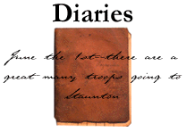

The Joseph Waddell Diary
Excerpts from the Augusta historian's own account of the war
The Andrew Brooks Diary
A Waynesboro resident's account of his experiences in the Confederate Army
and as a prisoner of war
The Nancy Emerson Diary
The diary of an Augusta County woman (formerly a New Yorker) who is
vehemently pro-South
The Jacob Hildebrand Diary
Selections from a Mennonite farmer's observations on daily farm life
and Staunton events
 Return to Main Menu
Return to Main Menu
 Return to the Valley of the Shadow
Return to the Valley of the Shadow